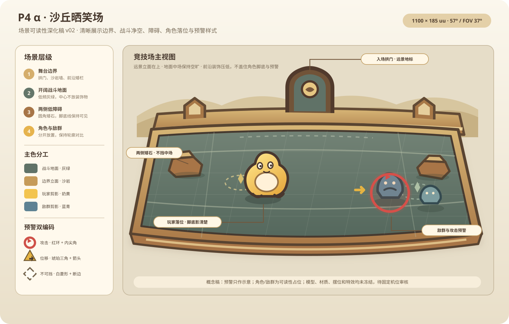

A2 场景方向 v02 · 视觉已通过 · 非 UE 运行时素材
沙丘晒笑场：固定机位场景可读性深化
已通过本版场景视觉方向：沙岩舞台边界、入场拱门、灰绿中场、两侧低障碍、玩家与敌群落位，以及攻击预警示例。UE 场景模型、材质、障碍摆位和战斗特效仍待制作与运行时确认。

1100 × 185 uu · 57° / FOV 37° · P4 α 视觉候选稿
舞台边界：沙岩后墙与入场拱门
战斗地面：低频灰绿
障碍：两侧低矮圆角石
中场：角色与战斗读区
预警：色彩 + 形状